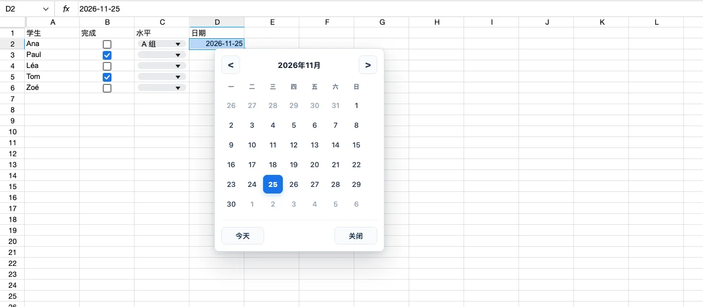

复选框、列表与日历

复选框
选择单元格，插入 › 复选框。单击可勾选或取消；单元格的值为 TRUE 或 FALSE。
=IF(B2, "已完成", "待办")
=SUMPRODUCT(B2:B6, C2:C6)
=SUMPRODUCT(B2:B6, B2:B6)第二个公式对勾选行的 C 列值求和；第三个公式统计勾选的数目。
下拉列表
选择单元格，插入 › 下拉列表…。
| 来源 | 内容 |
|---|---|
| 值 | 选项，每个输入框一个；添加选项；不含逗号 |
| 从范围 | 以其单元格为选项的区域：工作表2!$A$1:$A$10 |
不带 $ 的区域会像填充的公式一样逐格移动。其单元格变化时，选项随之变化。
单元格显示箭头；单击打开选项。不接受列表以外的值。
日历
双击日期单元格会打开日历：选择日期，用 < 和 > 切换月份，今天 选择今天。凡设有日期格式的单元格（即使为空）都会打开日历，除非其中有公式或已锁定。
要用日历填写一列日期：选择该列并设置 日期 格式。
移除
Delete 移除单元格中的复选框或列表及其值。
复选框和列表保存在 Excel 文件中；复选框在其中即为 Excel 复选框。